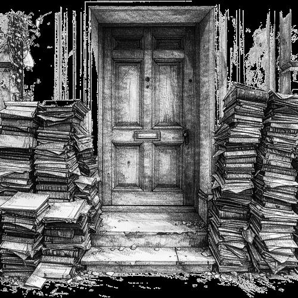
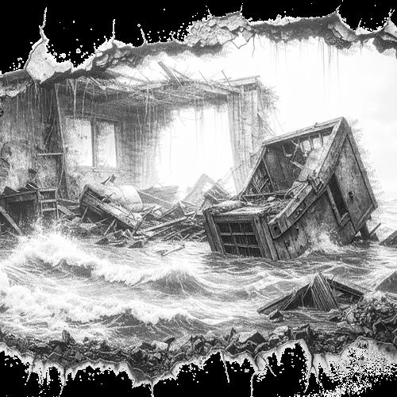

// FREQUENZ_LOOP_SEKTOR_05
// SYSTEMISCHE_DEKODIERUNG // AZ-VIB-005
Exekutive Duldung und physikalische Schwingung
Als technischer Autor nutze ich die inimitable temptation der Worte als Bildmaschine. Thermische und mechanische Auswirkungen der Dachlüftungsanlage.
Kern-Axiom: "Die Duldung ist kein Mangel an Beweisen, sondern die organisierte Neutralisierung der Messbarkeit."
// BILD-ARTEFAKTE ZU DIESEM THEMA (SW-DOKUMENTE)

